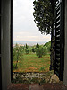
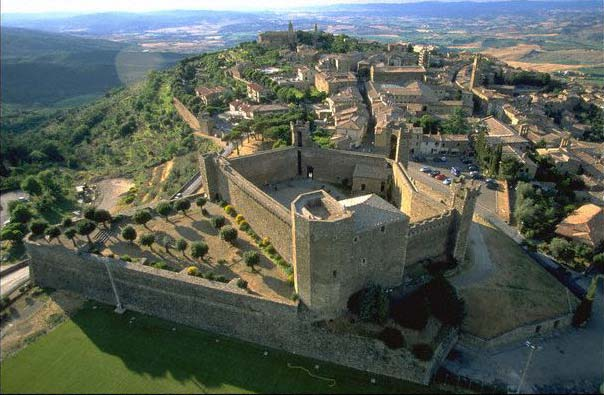
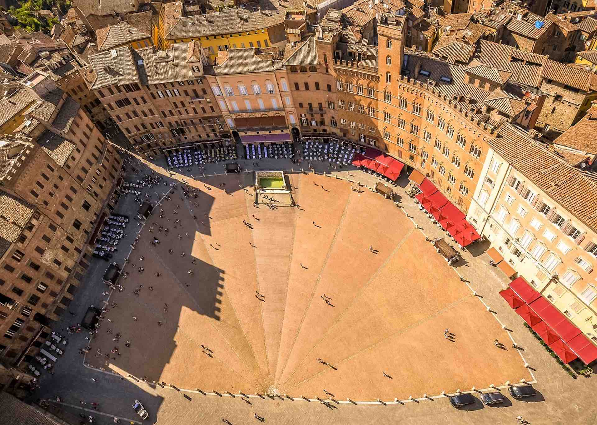
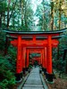
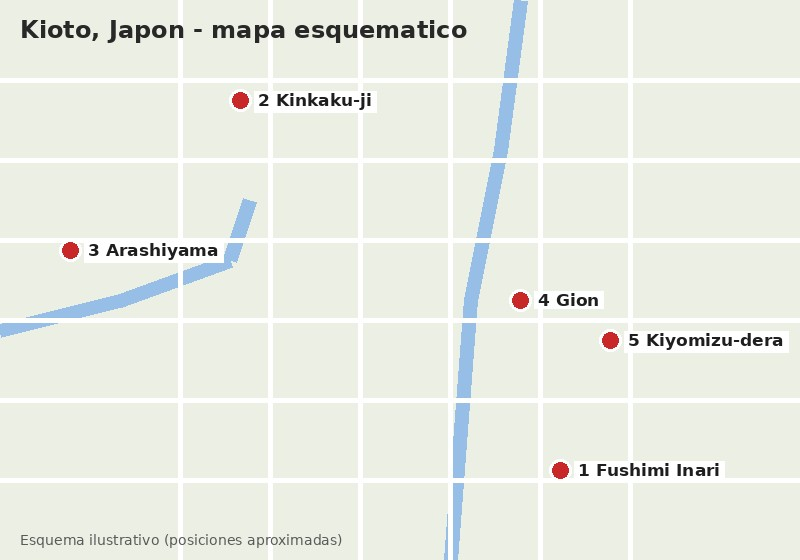
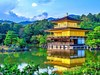
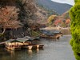
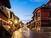
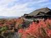

Esta es una breve crónica de mi visita a Italia. Da clic sobre las fotos miniatura para tener una vista más grande de cada fotografía. ¡Disfrútalo!
| Imagen miniatura | Lugar | Fecha y hora aprox. de la visita | Descripción | Mapa de la ubicación |
|---|---|---|---|---|
 |
Pozzarello | Verano, mañana aprox. 9:00 am | La casa en la que nos alojamos se llamaba Pozzarello y fue construida alrededor del año 1200 como hogar del jardinero que cuidaba los terrenos del castillo aledaño. Las gruesas paredes nos mantenían agradablemente frescos adentro, a pesar del calor abrasador del medio día. Esta es la vista desde la ventana de nuestra habitación. |  |
|
El campo Toscano | Verano, tarde aprox. 5:00 pm | Esta es la escena del camino a Montalcino (¡todos los caminos conducen a Montalcino!). Se parece mucho a la escena del camino a Sienna, y al camino hacia la tienda de comestibles. Estábamos rodeados de hermosos paisajes durante la mayor parte del viaje. | |
|
Sienna | Verano, mañana aprox. 10:30 am | La ciudad más cercana a nuestra villa era Sienna, estaba a unos 30 minutos. Pasamos muchos días explorando las calles empinadas y torcidas, probando la cocina local en restaurantes al aire libre, y parando en la oscuridad y haciendo eco en las iglesias principales o Duomos para escapar del sol. |  |
|
Los postres | Verano, tarde aprox. 4:00 pm | Una de las mejores partes del viaje fue pasar por las pastelerías del pueblo. Sus vitrinas estaban llenas de tartas de mermelada, pasteles de chocolate y galletas recién horneadas, y era imposible irse sin probar al menos un par. | |
|
La catedral de Sienna | Verano, mediodía aprox. 1:00 pm | El Duomo de Sienna nos dejó sin palabras. Su fachada de mármol blanco, verde y rosado está llena de esculturas y detalles, y frente a ella los puestos de souvenirs y los turistas le daban vida a la plaza a cualquier hora del día. | |
|
La lavanda | Verano, tarde aprox. 5:30 pm | En el jardín de la casa crecía lavanda por todos lados. Su aroma llenaba el aire por las tardes, y el color morado resaltaba contra los muros de piedra y los techos de teja de la villa. |
Un viaje que me gustaría hacer: Kioto, Japón. Da clic sobre las miniaturas para ver la foto en tamaño normal.
| Miniatura | Lugar | Mejor época y hora para ir | Descripción | Mapa de la ubicación |
|---|---|---|---|---|
 |
Fushimi Inari | Todo el año, 7:00 am (hay menos gente) | Santuario famoso por sus miles de puertas torii rojas que forman senderos en medio del bosque. |  |
 |
Kinkaku-ji | Primavera o verano, 10:00 am | El Pabellón Dorado, un templo cubierto de hoja de oro que se refleja en un estanque. | |
 |
Arashiyama | Otoño (noviembre), 9:00 am | Zona junto al río con botes tradicionales y montañas llenas de colores de otoño. | |
 |
Gion | Todo el año, atardecer aprox. 6:00 pm | El barrio histórico de casas de madera, casas de té y geishas. | |
 |
Kiyomizu-dera | Otoño (noviembre), 4:00 pm | Templo con una gran terraza de madera y vista a la ciudad entre árboles de colores. |